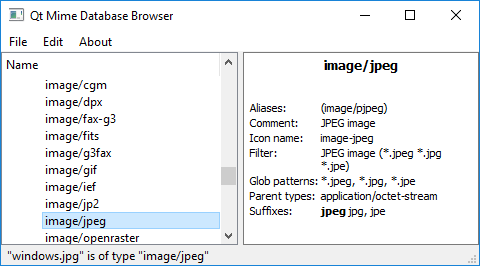

MIME Type Browser Example
Shows the hierarchy of MIME types and can be used to determine the MIME type of a file.

MIME Type Browser is intended to be a tool for exploring MIME types rather than an example showing the typical usage of Qt's MIME API.
Running the Example
To run the example from Qt Creator, open the Welcome mode and select the example from Examples. For more information, visit Building and Running an Example.
Main Window
The main window consists of a tree view displaying the hierarchy of MIME types based on the model MimetypeModel inheriting QStandardItemModel on the left and a QTextBrowser for showing detailed information about the selected MIME type on the right.
It has a main menu with an option File/Detect File Type, which lets you pick a file and then displays its MIME type.
For more information, see QMimeType and QMimeDatabase.